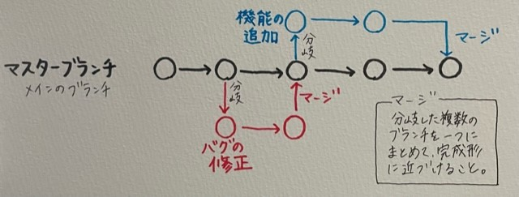
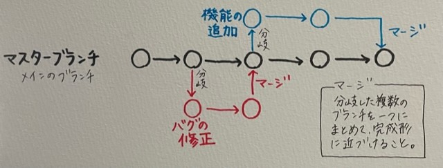

Gitとは？
Gitとは分散型バージョン管理システムである。
ファイルのバージョン管理を簡単に行うことができるため、複数人で開発する現場では必須のツールである。
ファイルのバージョン管理を簡単に行うことができるため、複数人で開発する現場では必須のツールである。
Gitを使ってできること
- ファイルの変更履歴管理
- 過去のファイルに戻す
- 編集した履歴を複数人で共有
- 複数人で修正した部分を一つに結合できる
→編集前のファイルを残したまま、新しく編集したファイルを保存できる
「古いバージョンから新しいバージョンまでの管理が簡単」
時間短縮ができ、人的ミスが減ることで作業を効率化できる
プログラマー以外も活用できる
Gitはソースコードを管理するだけのシステムではなく、
テキストデータや画像データ、Excelファイルなども管理することができる。
そのため、業務の特徴などからWebデザイナーやWebライター、
その他にも多くのファイルを編集したり、修正したりする必要がある事務作業にも活用できるシステムである。
テキストデータや画像データ、Excelファイルなども管理することができる。
そのため、業務の特徴などからWebデザイナーやWebライター、
その他にも多くのファイルを編集したり、修正したりする必要がある事務作業にも活用できるシステムである。
Gitの構造
Gitの構造は、下図のようになっている。

＜用語解説＞
リポジトリ(repository)
ファイルやディレクトリの保管場所
Gitにおけるリポジトリは二種類
コミット(commit)
ファイルやディレクトリの編集内容をローカルリポジトリに記録するために必要な操作
コミットを実行するごとに編集した日時を記録したファイルが生成され、時系列順に保管される。
ワークツリー
ユーザー編集している作業中のディレクトリのこと
インデックス
ワークツリーとローカルリポジトリの間の中間領域
ワークツリーで編集したファイルをコミットする場合、一度インデックスに登録する必要がある。
＜理由＞
１，ワークツリーからリポジトリに直接保存するとミスが増え、効率が悪い
２，コミット予定のファイルを後からまとめて確認した上でコミットできる→コミットし忘れを防ぐ
クローン(clone)
複数人で共有しているファイル（リモートリポジトリ）をまるごと自分のローカルリポジトリに保存する機能→ダウンロードに近いもの
クローンに対して、ローカルリポジトリにないファイルや他のユーザーが更新したファイルのみをダウンロードする機能をプルという。
プッシュ(push)
ローカルリポジトリにあるファイルをリモートリポジトリに送信して保存する機能
→アップロードに近いもの
ブランチ(branch)
ファイルの編集履歴を分岐をさせて記録していく機能
→複数のユーザーが並行して同時に行う作業（バグの修正や機能の追加など）を正確に管理するためにある機能

＜用語解説＞
リポジトリ(repository)
ファイルやディレクトリの保管場所
Gitにおけるリポジトリは二種類
- リモートリポジトリ 特定のサーバ上に設置して複数人で共有するためのリポジトリ
- ローカルリポジトリ ユーザごとに設置される手元のマシンで編集できるリポジトリ
コミット(commit)
ファイルやディレクトリの編集内容をローカルリポジトリに記録するために必要な操作
コミットを実行するごとに編集した日時を記録したファイルが生成され、時系列順に保管される。
ワークツリー
ユーザー編集している作業中のディレクトリのこと
インデックス
ワークツリーとローカルリポジトリの間の中間領域
ワークツリーで編集したファイルをコミットする場合、一度インデックスに登録する必要がある。
＜理由＞
１，ワークツリーからリポジトリに直接保存するとミスが増え、効率が悪い
２，コミット予定のファイルを後からまとめて確認した上でコミットできる→コミットし忘れを防ぐ
クローン(clone)
複数人で共有しているファイル（リモートリポジトリ）をまるごと自分のローカルリポジトリに保存する機能→ダウンロードに近いもの
クローンに対して、ローカルリポジトリにないファイルや他のユーザーが更新したファイルのみをダウンロードする機能をプルという。
プッシュ(push)
ローカルリポジトリにあるファイルをリモートリポジトリに送信して保存する機能
→アップロードに近いもの
ブランチ(branch)
ファイルの編集履歴を分岐をさせて記録していく機能
→複数のユーザーが並行して同時に行う作業（バグの修正や機能の追加など）を正確に管理するためにある機能

GitとGithubの違い
Git
誰がいつどのように編集したかを正確に把握できるバージョン管理システムのこと。
Github
Gitと連携して、他のユーザーとやりとりをしやすくしているWebサービスの名称。
Gitはツールの名称で、GithubはWebサービスの名称。Githubの他にもBitbucketやBacklogなどがある。
誰がいつどのように編集したかを正確に把握できるバージョン管理システムのこと。
Github
Gitと連携して、他のユーザーとやりとりをしやすくしているWebサービスの名称。
Gitはツールの名称で、GithubはWebサービスの名称。Githubの他にもBitbucketやBacklogなどがある。
HTMLとは
HTML（ハイパー・テキスト・マークアップ・ランゲージ）は、Webページを作成するための言語
「マークアップ」とは、文章の構成や文章の役割（見出しや段落、表、リンクなど）を示すという意味の言葉
ほとんどのWebページはHTMLとCSSという言語でその見た目がつくられている。
基本的にはWebページに書かれている文字がHTMLであると考えてよい
文字は普通のテキスト以外にも、見出しや太字、文字の色を変える、下線をいれることもできる。
「マークアップ」とは、文章の構成や文章の役割（見出しや段落、表、リンクなど）を示すという意味の言葉
ほとんどのWebページはHTMLとCSSという言語でその見た目がつくられている。
基本的にはWebページに書かれている文字がHTMLであると考えてよい
文字は普通のテキスト以外にも、見出しや太字、文字の色を変える、下線をいれることもできる。
HTMLのタグ
タグとは、文字に意味を与える印のようなもの。
文字列などを「タグ」で囲んだ情報の単位のことを要素という。
文字列などを「タグ」で囲んだ情報の単位のことを要素という。
CSSとは
CSS（カスケーディング・スタイル・シート）とは、Webページのスタイルを指定するための言語である。
スタイル→Webページの文字の色や大きさ、背景、配置
スタイル→Webページの文字の色や大きさ、背景、配置